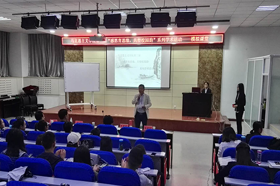
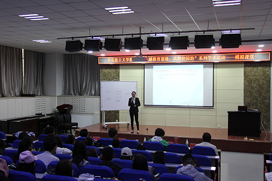
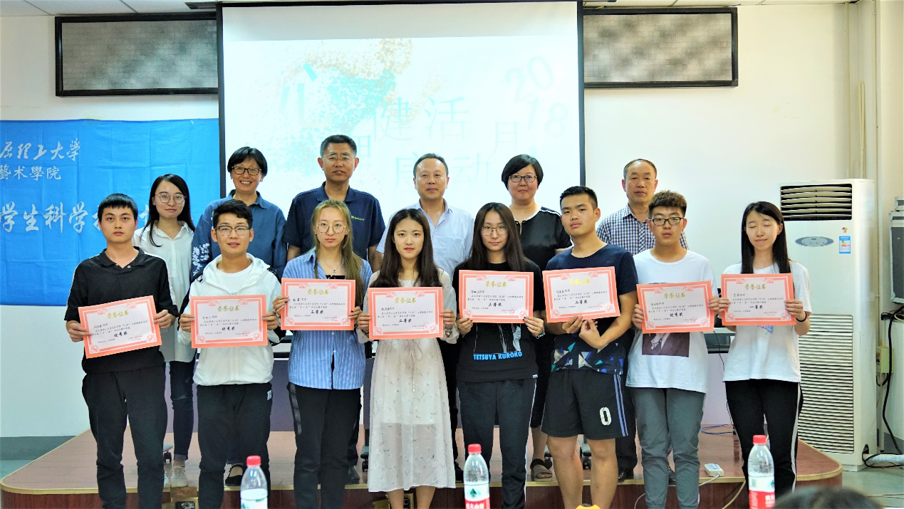
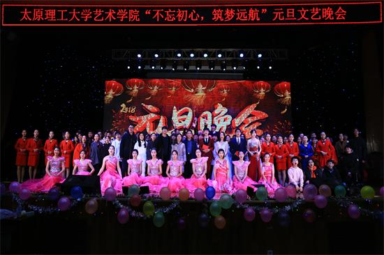

闻广慧辟 胜友学成
——第三届“感恩育思缘，共塑校园韵”五校联合系列学术活动 在马克思主义学院举办
2018-04-24 19:10阅读量：43
为深入学习宣传贯彻习近平时代中国特色社会主义思想和党的十九大精神,喜迎我校116周年华诞,紧扣“立德树人”根本任务,加强学生思想政治教育,同时提升人文社科学科学生的专业学术能力,马克思主义学院邀请了山西大学、太原师范学院、晋中学院和太原学院相关专业的学生,于2018年4月22日在学院一层报告厅举办了第三届“感恩育思缘,共塑校园韵”系列学术活动。担任本次活动评委的有:太原学院中文系团总支书记常靖,太原理工大学马克思主义学院副教授李银香,马克思主义学院教科办主任李伟。马克思主义学院党委副书记赵存东,团委书记兼学工办主任芦倩及学院百余名学生代表出席了本次活动。

赵存东主持了开幕式,他说此次活动就是要找准学生需求燃点,搭建平台,创新载体,让同学们围绕学业、专业、学术、自主学习,自发学习,自觉学习,坚定以习近平新时代中国特色社会主义思想和党的十九大精神为指导,坚定马克思主义信仰,加强理想信念主题教育,不断推出深受学生喜爱、贴近学生心理、提升学生能力的“有态度、有温度、有厚度、有力度”的精品教育产品,倡导形成一种学习理论、指导实践、塑造思想、升华精神的风气、用中国梦激扬青春梦。

“模拟课堂”比赛环节中共有来自五所学校的十名选手参赛,选手们分别就历史、政治、社会学、认识理论、中国诗词等专题进行了精彩的讲课。课件、板书、互动等各个环节各有千秋,充分体现了学生们课堂教学的良好风貌和饱满激情,给老师和观众都留下了深刻的印象。评委老师李银香、常靖、李伟对每名选手的授课展示都认真倾听、悉心点评,既肯定了每位选手的讲课技巧和方法,也提出了针对性的建议,大家都受益匪浅。

此次活动将持续三周,“模拟课堂”是第一个模块,随后即将开展的“教育青年说”和“对话名师”等环节热烈欢迎大家参与。
最新发布

马克思主义学院举办2018年暑期“三下乡”社会实践2018-09-28 18:50

心理健康活动月通讯稿2018-06-05 22:46
闻广慧辟
胜友学成 ——第三届“感恩育思缘，共塑校园韵”五校联合系列学术活动 在马克思主义学院举办2018-04-24
19:10

马克思主义学院举办“青年大学习——中国特色大国外交的实践与研究”专题讲座2018-04-13 16:13

我校马克思主义学院与太原学院中文系开展学生干部交流活动2018-04-13 16:07

软件学院“梦满太理，家国情浓”元旦晚会成功举办2018-03-30 17:31

艺术学院“不忘初心
筑梦远航”元旦文艺晚会成功举办2018-03-30 17:25

软件学院党员学长见面会顺利召开2018-03-30 17:20